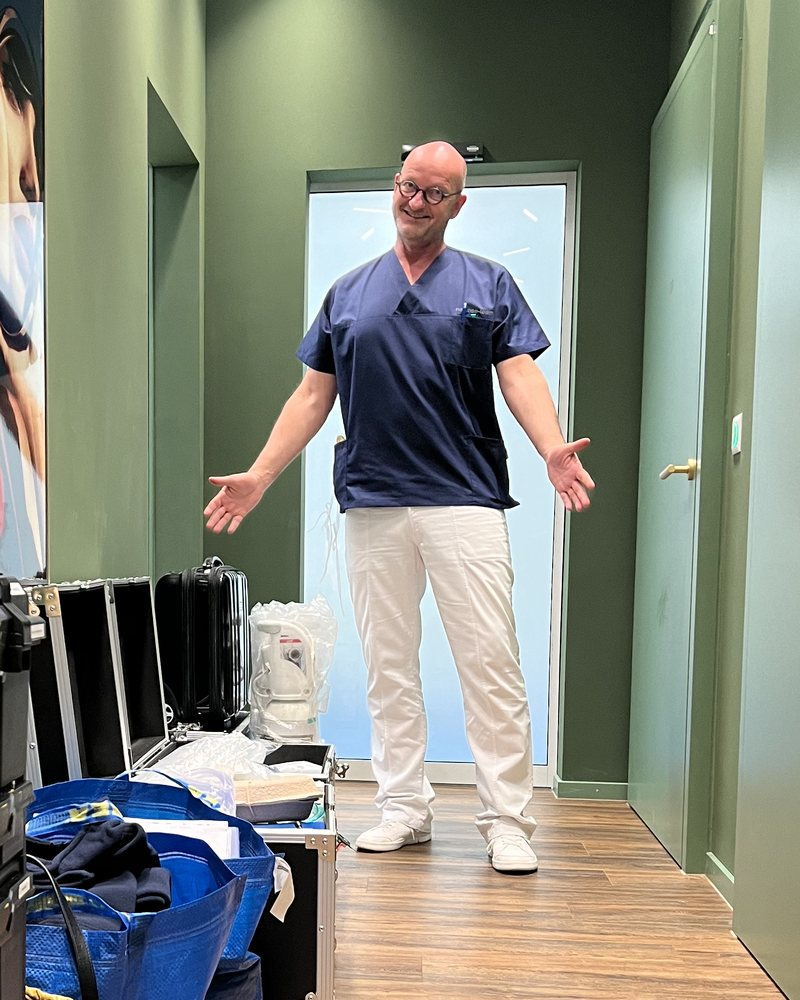
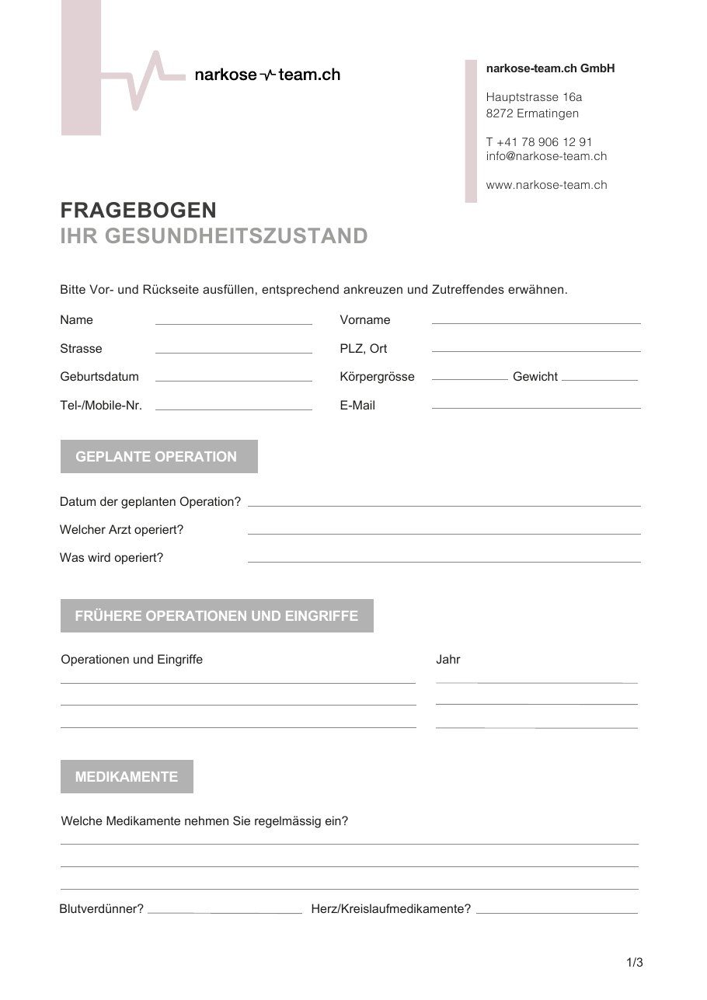

simplesmoothsafe
patient*innen.
Ihre Sicherheit und Ihr Wohlbefinden im Mittelpunkt.
Willkommen auf der Patient*innenseite von narkose-team.ch. Hier möchten wir Ihnen alle wichtigen Informationen zu unseren Anästhesieleistungen bieten und Ihnen den Weg zu einer sicheren und komfortablen Behandlung erleichtern.
Unsere Anästhesiedienstleistungen.
Wir bei narkose-team.ch verstehen, dass der bevorstehende Eingriff und die Anästhesie Fragen und möglicherweise auch Sorgen hervorrufen können. Unser Ziel ist es, Ihnen ein Höchstmass an Sicherheit und Vertrauen zu bieten. Unsere erfahrenen Anästhesist*innen und Pflegefachpersonen setzen moderne Anästhesieverfahren ein, die individuell auf Ihre Bedürfnisse abgestimmt sind.

Bei uns sind Sie in guten Händen.
Bei narkose-team.ch stehen Ihre Sicherheit und Ihr Wohlbefinden im Mittelpunkt. Unser erfahrenes Team garantiert eine professionelle Anästhesieversorgung, die auf modernste Technik basiert und individuell auf Ihre Bedürfnisse abgestimmt ist.

patient*innenstimmen.
Emotional hat mich Ihr Verhalten bis heute nachhaltig positiv beeinflusst, weil mir all meine Ängste durch Sie genommen wurden. Ich würde mir wünschen, dass jeder Mensch, welcher einen Eingriff vornehmen muss, so ein Anästhesieteam hat, wie ich es mit Ihnen hatte. Ohne Bedenken und ohne Zögern würde ich Sie immer wieder weiterempfehlen, und dürfte ich meinen Anästhesisten jederzeit wählen, wären es immer Sie.Das Team von Dr. Heller hat mich vor, während und nach der OP sehr gut informiert und betreut. Ich habe mich in sehr guten Händen gefühlt und kann das Team sehr empfehlen. Besonders erfreulich war, dass mehrfach persönlich durch den Anästhesisten direkter Kontakt zu mir gesucht wurde, um meine Fragen zu beantworten.Ich war sehr zufrieden, kann nur sagen top Team, sehr nett, kompetent, sehr menschlich, hoch professionell und auch persönlich engagiert für Patienten. Ich würde mich wieder bei einer neuen OP an euch wenden. Wünsche dem ganzen Team nur das Beste.Weitere Stimmen
Ihre Fürsorge und Umsorgung am Tag des Eingriffes haben mir diesen Eingriff so angenehm wie nur möglich gemacht.Das präoperative Gespräch fand telefonisch statt. Ich war sofort mit dem für mich zuständigen Arzt verbunden, sodass weitere Versuche, das Narkose-Team zu erreichen, erfreulicherweise nicht nötig waren. Alle meine Fragen wurden beantwortet, alle Anweisungen waren für mich verständlich. Insgesamt fand ich die Behandlung angenehm und vertrauenswürdig. Ich bin vollstens zufrieden.My experience was very positive.Ein grosses Dankeschön an das Narkoseteam. Ich möchte mich ganz herzlich beim Team von Herrn Dr. med. Gunnar Heller bedanken. Vom ersten Gespräch bis zur Nachsorge fühlte ich mich rundum gut betreut. Die Ärzte haben sich viel Zeit genommen, um alle Fragen zu beantworten und mir die Narkosebehandlung verständlich zu erklären. Sie waren nicht nur professionell, sondern auch einfühlsam und beruhigend, was mir sehr geholfen hat, meine Nervosität zu überwinden. Das gesamte Team war sehr freundlich und einfühlsam. Es war ein sehr beruhigendes Gefühl, nie alleine zu sein, und ich fühlte mich zu jeder Zeit gut betreut und aufgehoben. Ich kann euch nur weiterempfehlen! Vielen Dank nochmals.Ich hatte eine Oberkiefer-OP, bei der ich durch das narkose-team super betreut wurde. Erstklassige Arbeit, ich kann das Team nur empfehlen. Herzlichen Dank, Kerstin Reichert und Gunnar Heller.A big thank you to the narkose-team for making my surgery smooth as I had been quite stressed for over a week prior to the intervention. Having sweet dreams during my narcosis and feeling great when waking up, with absolutely no nausea. Amazing! The feeling one can have after two glasses of Champagne or being at your favourite concert; all hyper, happy and funny. They made me a perfect sleep mocktail!Haben Sie noch Fragen?
Wir stehen Ihnen gerne zur Verfügung.
Rufen Sie uns gerne an oder verwenden Sie unser Kontaktformular.
We are on social media